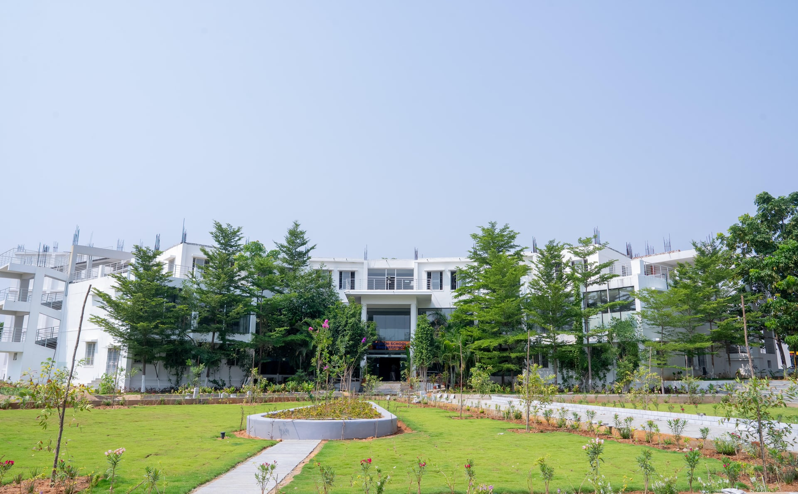

Autonomous | Established 2015 | Puttaparthi, AP, India
Sanskrithi School of Engineering (SSE), Puttaparthi, Andhra Pradesh, India, established in 2015, is an autonomous engineering institution committed to quality, outcome-based and experiential education. SSE offers undergraduate and postgraduate engineering programmes supported by modern laboratories, research facilities, a central library, innovation spaces and a student-centric learning environment.
The institution places strong emphasis on innovation, entrepreneurship, industry engagement, professional skills and holistic student development. The Institution’s Innovation Council, research centres and SSE–RISE Fab Lab provide platforms for ideation, prototyping, experimentation and real-world problem-solving.
SSE is also recognised as the first industry-integrated engineering campus in Andhra Pradesh, with industry interaction embedded in the academic ecosystem. Strategically located in Puttaparthi, SSE is approximately 1.5 hours by road from Bengaluru, the “Silicon City of India”, providing proximity to one of the country’s leading technology and innovation ecosystems.
A distinctive strength of SSE is its internationally connected and industry-driven ecosystem. Through the RISE (Research & Industrial Systems Engineering) Office, around 30 software product development engineers work on campus, creating opportunities for students to engage with live industry practices, projects and emerging technologies.
Six Professors of Practice associated with international universities & industries, strengthening global mentoring.
International collaboration through European experts & RISE/RIT programme bringing global tech into education.
Approximately 60% women students, demonstrating a strong commitment to gender diversity and empowerment.
Social responsibility promoted via Saiprudent Scholarship Programme and community engagement.
Green-campus practices and SDG-linked innovation activities fostering sustainable development.
On-campus RISE Office with 30 software product engineers working directly alongside students.
By integrating engineering education, international collaboration, industry engagement, innovation, sustainability and social impact, SSE is building a future-ready ecosystem that prepares engineers to address complex technological and societal challenges.
Located in Puttaparthi, AP (~1.5 hours from Bengaluru Silicon Hub).